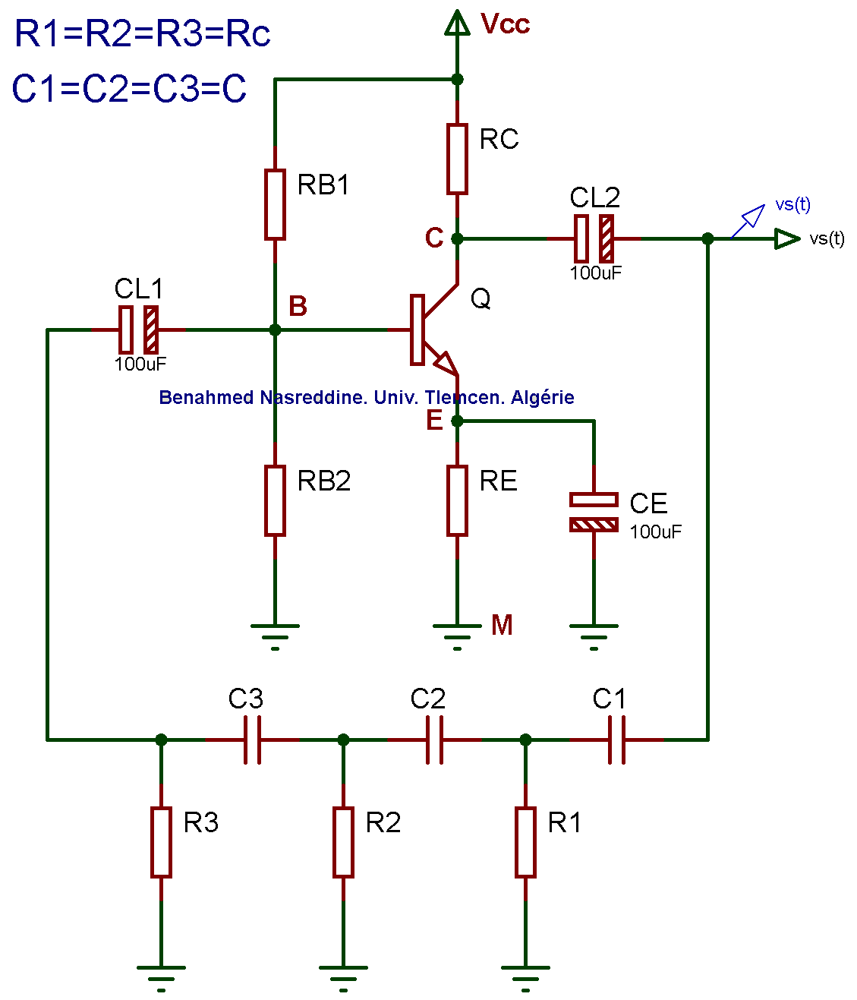

Calculateur d'oscillateur a trois cellules (Rc-C) a transistor bipolaire. Par Benahmed Nasreddine, Univ. Tlemcen, Algerie.
Entrez les valeurs de Vcc, Beta, Icq et la frequence d'oscillation f0 desiree (Ici R=Rc).
Tension d'alimentation (Vcc) :
Gain en courant Beta du transistor :
Courant de polarisation (Icq) du transistor :
Frequence d'oscillation (f0) :
CALCULER
REINITIALISER
